Trajectory Tracking and Safety-Critical Control
Overview
Trajectory tracking requires a vehicle to follow a time-parameterized reference, which is a stricter requirement than path following: the vehicle must be at the right place at the right time. My research develops tracking controllers with formal guarantees on how and when the vehicle converges, including finite-time convergence, exact-time convergence at a time chosen before the mission, and convergence that never leaves a prescribed safe region.
Tracking is often required to be safe as well as accurate. The vehicle must stay within velocity, attitude, and spatial limits throughout the transient, even under model uncertainty and disturbances. I use sliding mode control, Barrier Lyapunov functions (BLF), Control Barrier Functions (CBF), and exact-time stability theory to design such controllers, and the work is organized below by vehicle type. Work on actuator limits enforced by construction is on the Admissibility-Preserving Control page.
Key Contributions
3D trajectory tracking for quadrotors with asymmetric constraints on all six degrees of freedom, using barrier Lyapunov functions.
Almost global finite-time trajectory tracking for an uncertain quadrotor, with a modified exponential reaching law for faster convergence.
Exact-time trajectory tracking for autonomous surface vessels, with the convergence time selected before the mission and independent of initial conditions.
Robustness to partially known inertia and damping, and to bounded external disturbances, including disturbance-observer-based designs.
CBF-based approaches for simultaneous satisfaction of multiple safety constraints.
Quadrotor UAVs
A quadrotor is underactuated: four inputs (the net thrust and three moments) must control six degrees of freedom. Both quadrotor designs below use a cascaded architecture. An outer loop regulates position and produces the thrust and the desired roll and pitch angles, and an inner loop regulates attitude through the moments. Each attitude channel has the form
\[ \ddot\Theta_k = \mathcal F_k + \mathcal G_k u_k + h_k, \quad k \in \{\phi,\theta,\psi\} \]
where \(\mathcal F_k\) captures gyroscopic and cross-coupling terms, \(\mathcal G_k\) is the inertia-dependent control effectiveness, and \(h_k\) is a bounded uncertainty arising from the partially known inertia matrix.
Three-dimensional Trajectory Tracking under Motion Constraints
Saurabh Kumar, Shashi Ranjan Kumar, and Abhinav Sinha, AIAA Journal of Guidance, Control, and Dynamics, Vol. 49, No. 1, 2026, pp. 78–96.
Inspection tasks such as tunnels, pipelines, and power lines confine the vehicle to a narrow corridor, so the position must never leave its bounds, even during the transient. This work constrains all six degrees of freedom, position and attitude, through asymmetric bounds on the tracking errors, and enforces them with an asymmetric barrier Lyapunov function:
\[ \mathcal{W}_\ell = \frac{1-q(\gamma_\ell)}{2}\ln\frac{\underline{\gamma}_\ell^{2}}{\underline{\gamma}_\ell^{2}-\gamma_\ell^{2}} + \frac{q(\gamma_\ell)}{2}\ln\frac{\overline{\gamma}_\ell^{2}}{\overline{\gamma}_\ell^{2}-\gamma_\ell^{2}}, \qquad q(\gamma_\ell)=\begin{cases}1,&\gamma_\ell>0\\0,&\gamma_\ell\le 0\end{cases} \]
where \(\gamma_\ell\) is the position error and \(-\underline{\gamma}_\ell\), \(\overline{\gamma}_\ell\) are its lower and upper bounds. The function grows without bound as the error approaches either limit. A backstepping design keeps \(\dot{\mathcal W}\le 0\), so every error starting inside its bounds stays inside them, and converges asymptotically to zero, while linear and angular velocities remain bounded. Using asymmetric rather than symmetric bounds strictly enlarges the set of safe initial conditions.
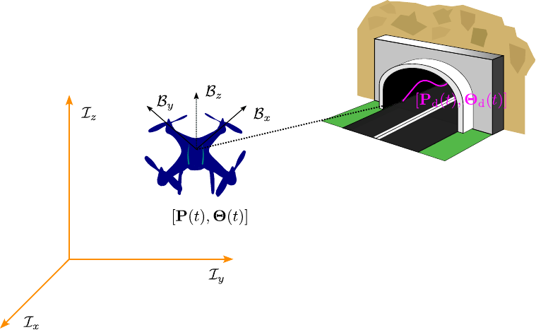
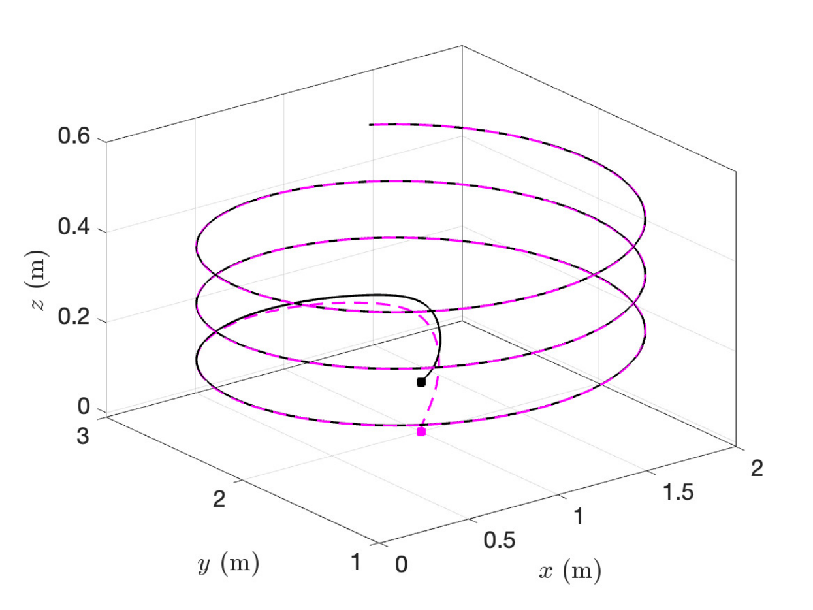
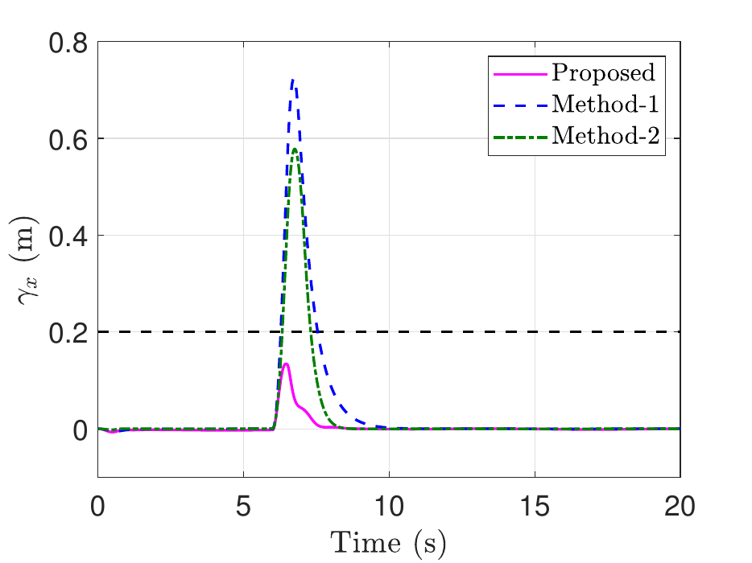
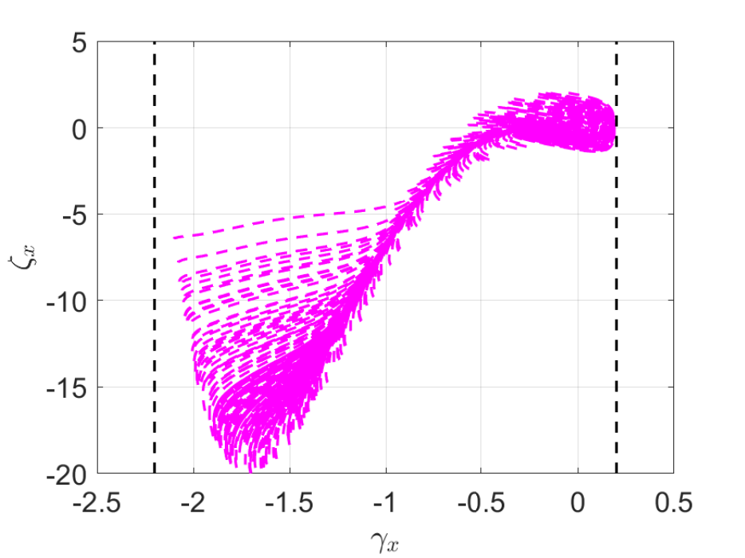
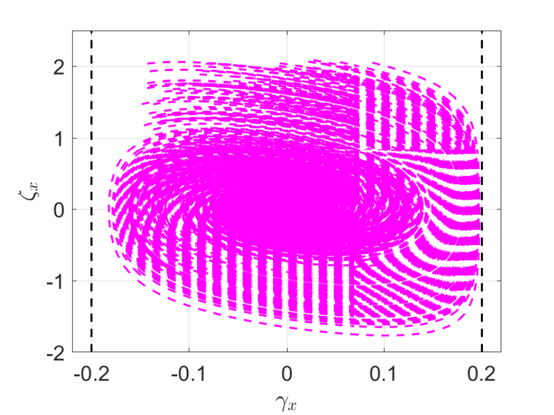
Robust Trajectory Tracking with Almost Global Finite-time Convergence
Saurabh Kumar and Shashi Ranjan Kumar, Proceedings of the IMechE, Part G: Journal of Aerospace Engineering, Vol. 239, No. 8, 2025, pp. 792–817.
This work drives all six position and orientation errors to zero in finite time and keeps them there, from almost any initial condition, despite a partially known inertia matrix and bounded disturbances. Each channel uses a nonsingular terminal sliding manifold
\[ \mathcal{S}_i = \varrho_i + \frac{1}{\beta_i}\,\dot\varrho_i^{\,p_i/q_i}, \qquad 1<\frac{p_i}{q_i}<2 \]
where \(\varrho_i\) is the tracking error in channel \(i\). A second design replaces the constant reaching law with an exponential one,
\[ \dot{\mathcal{S}} = -\frac{\kappa}{\alpha_0 + (1-\alpha_0)\,e^{-\mathcal{N}|\mathcal{S}|^{\mathcal{P}}}}\,\mathrm{sign}(\mathcal{S}), \qquad 0<\alpha_0<1 \]
whose gain is large far from the manifold and falls back near it. This provably shortens the reaching time for the same gain, while limiting chattering. In simulation, the modified law gives lower position error (RMS 0.447 m) than two existing finite-time controllers (0.560 m and 0.832 m) with less control effort, and the design remains robust to actuator lag.
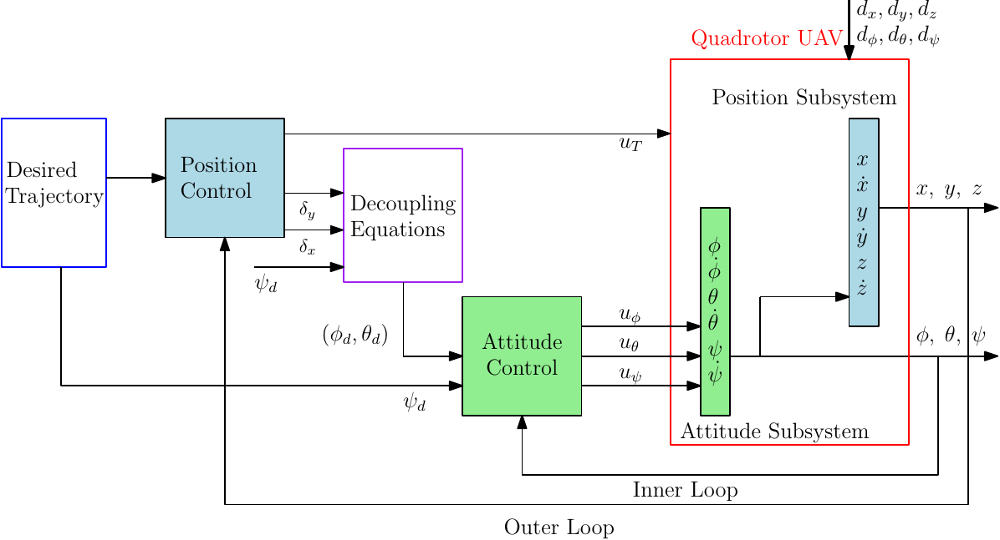
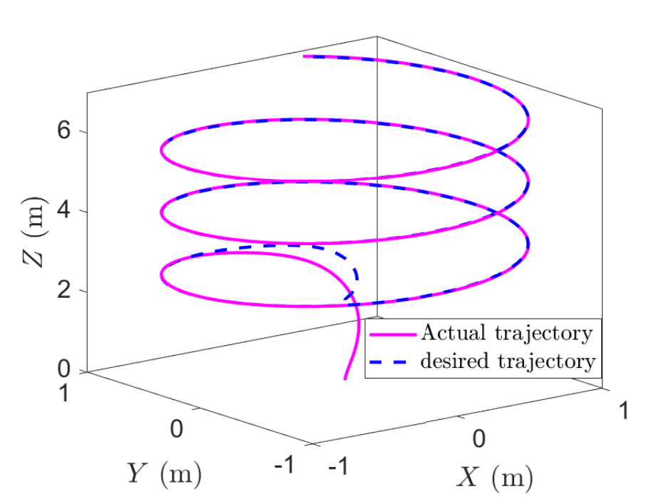
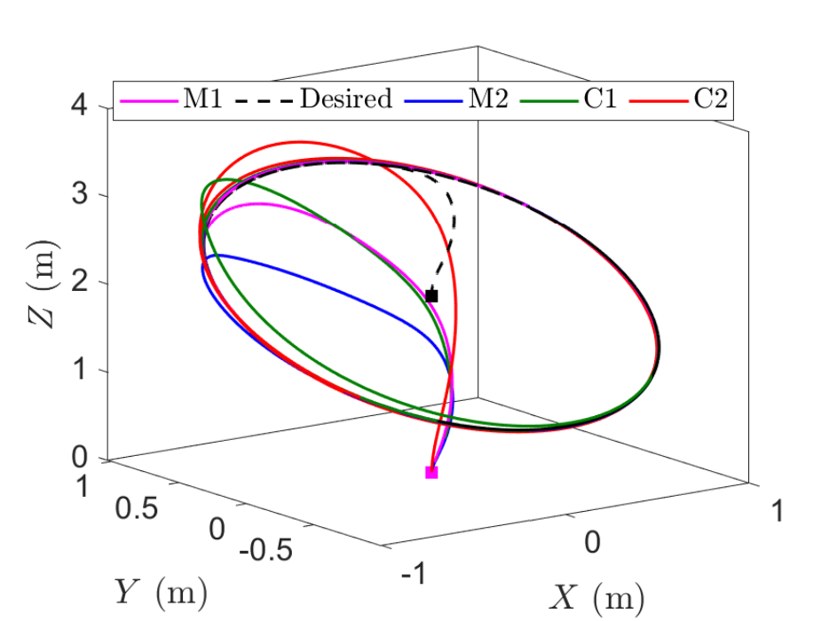
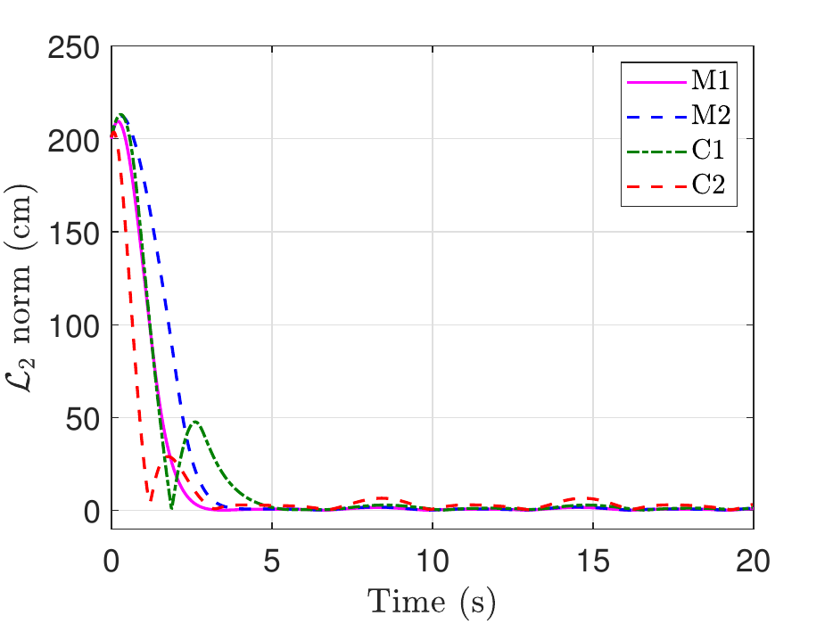
Autonomous Surface Vessels
Robust Exact-time Trajectory Tracking for Autonomous Surface Vessels
Susan Basnet, Saurabh Kumar, and Shashi Ranjan Kumar, IEEE Journal of Oceanic Engineering, Vol. 50, No. 2, 2025, pp. 1184–1195.
A surface vessel moving in the horizontal plane is described by the 3-DOF model
\[ \dot{\boldsymbol{\eta}} = \mathbf{R}(\psi)\,\boldsymbol{\nu}, \qquad \mathbf{M}\dot{\boldsymbol{\nu}} + \mathbf{C}(\boldsymbol{\nu})\boldsymbol{\nu} + \mathbf{D}(\boldsymbol{\nu})\boldsymbol{\nu} = \boldsymbol{\tau} + \mathbf{b} \]
where \(\boldsymbol\eta=[x,y,\psi]^\top\) is the position and heading, \(\boldsymbol\nu=[u,v,r]^\top\) the surge, sway, and yaw rates, and \(\mathbf b\) the disturbance from wind, waves, and currents. The Coriolis and damping matrices are only partially known.
Finite-time controllers converge at a time that depends on the initial state, and fixed-time controllers only bound it conservatively. This work achieves exact-time convergence: the designer picks the convergence time \(t_f\) before the mission. A two-layer sliding manifold with the time-varying gain \(\mathcal N_1/(t_f-t)\) starts on the manifold at \(t=0\), so there is no reaching phase, and then forces the pose error to follow
\[ \tilde{\boldsymbol{\eta}}(t) = \tilde{\boldsymbol{\eta}}(0)\left(1-\frac{t}{t_f}\right)^{\mathcal{N}_1} \]
which is exactly zero at \(t=t_f\) for any initial error. The design is given first for a known disturbance bound and then extended to unknown disturbances with a nonlinear disturbance observer. In simulations on the CyberShip II model, the vessel converges exactly at the chosen time from every initial condition tested, including 500 Monte Carlo runs, and gives the lowest tracking error in every channel compared with representative finite-time and fixed-time controllers.
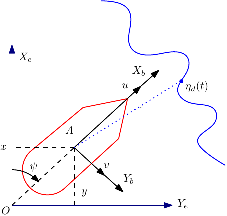
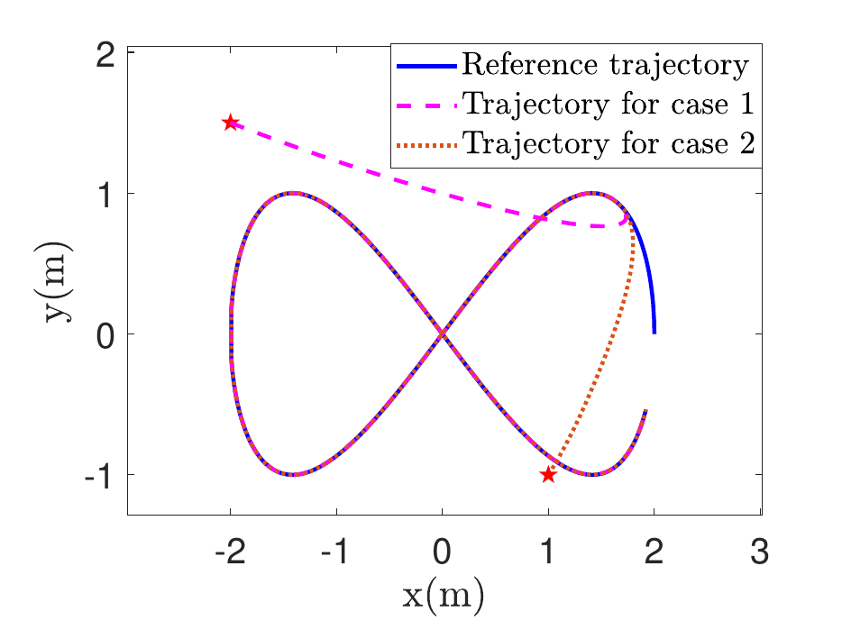
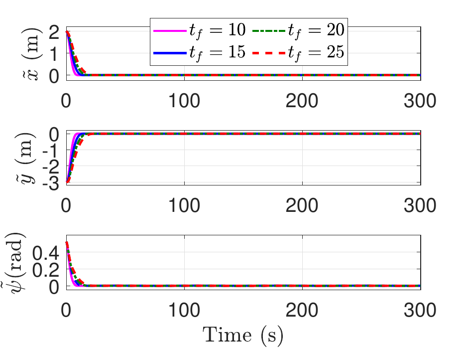
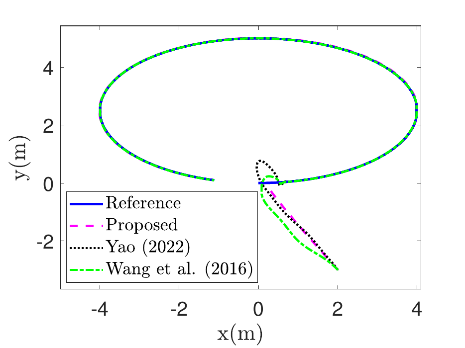
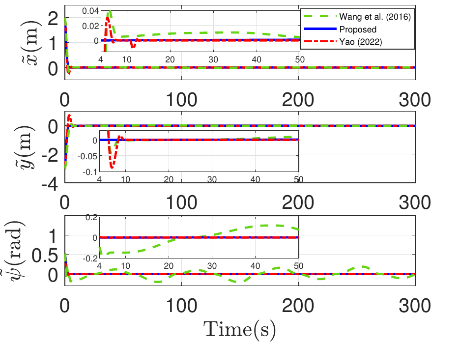
Relevant Publications
Journal Papers
Saurabh Kumar, Shashi Ranjan Kumar, and Abhinav Sinha, Three-dimensional Trajectory Tracking for Unmanned Aerial Vehicles Under Motion Constraints, AIAA Journal of Guidance, Control, and Dynamics, Vol. 49, No. 1, 2026, pp. 78–96.
Susan Basnet, Saurabh Kumar, and Shashi Ranjan Kumar, Robust Exact-time Trajectory Tracking Control for Autonomous Surface Vessels, IEEE Journal of Oceanic Engineering, Vol. 50, No. 2, 2025, pp. 1184–1195.
Saurabh Kumar and Shashi Ranjan Kumar, Robust Trajectory Tracking of an Uncertain Quadrotor with Almost Global Finite-time Convergence, Proceedings of the IMechE Part G: Journal of Aerospace Engineering, Vol. 239, No. 8, 2025, pp. 792–817.
Conference Papers
Saurabh Kumar, Shashi Ranjan Kumar, and Abhinav Sinha, Robust Nonlinear Control for Exact-time Stability of a Quadrotor UAV under Uncertainties, AIAA GNC Conference, Orlando, USA, 2024.
Susan Basnet, Saurabh Kumar, and Shashi Ranjan Kumar, Nonlinear Cooperative Strategy for Active Aircraft Defence with Exact-time Convergence, Indian Control Conference, Vishakhapatnam, 2023, pp. 239–244.
Saurabh Kumar and Shashi Ranjan Kumar, Barrier Lyapunov-based Nonlinear Trajectory Following for UAVs with Constrained Motion, ICUAS, Dubrovnik, Croatia, 2022, pp. 1146–1155.
Saurabh Kumar and Shashi Ranjan Kumar, Finite-Time Convergent Robust Trajectory Tracking for Unmanned Aerial Vehicles, ICUAS, Dubrovnik, Croatia, 2022, pp. 1166–1175.
Saurabh Kumar and Shashi Ranjan Kumar, Exponential Reaching Law based Robust Trajectory Tracking for UAVs, Indian Control Conference, Chennai, 2022, pp. 302–307.